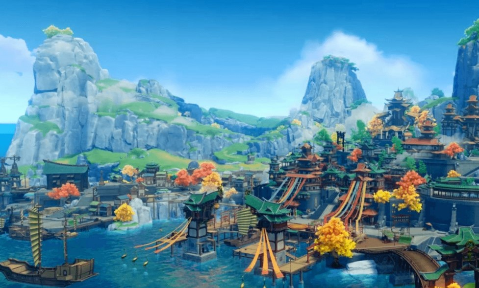
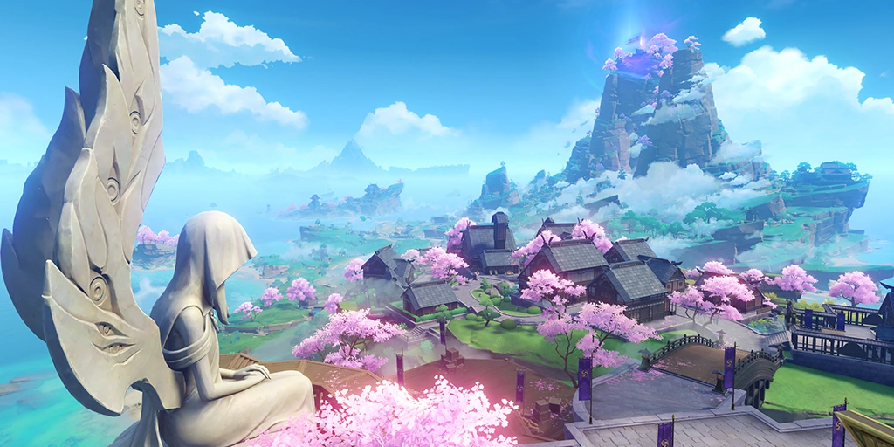
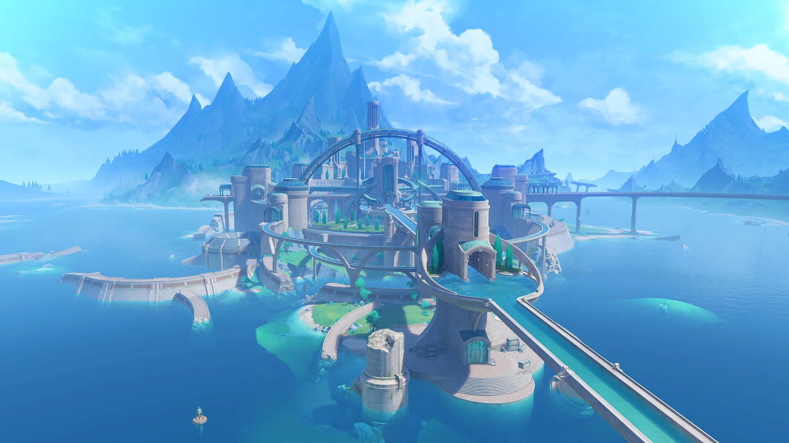

Mondstadt
A capital da liberdade, ao nordeste de Teyvat.Entre cadeias de montanhas e as vastas planícies, o vento da liberdade traz consigo o aroma de Dandelion e acaricia o lago de Cidra, trazendo à cidade, no meio do lago, a bênção de Barbatos (o deus da liberdade).suas construções se baseiam no estilo enxeimal,arquitetura medieval da Alemanha.
Liyue
Um porto próspero localizado ao leste de Teyvat. Liyue está localizada entre o sopé da Floresta de Pedra, das planícies grossas e um litoral cheio de vida, com mudanças sazonais claramente definidas e coloridas. Quantos presentes do Deus da Pedra estão escondidas entre suas montanhas? Liyue é uma das sete nações de Teyvat. É a nação que venera Morax, o Arconte Geo e Deus dos Contratos.
inazuma
Inazuma é uma das sete regiões de Teyvat. É uma região arquipelágica que adora Raiden Shogun, o Electro Arconte e Deus da Eternidade — que também é o líder de seu corpo governante, o Xogunato Inazuma. Inazuma está localizada a aproximadamente 4 km a sudeste do porto de Liyue e é vizinha do Mar Negro.
Sumero
Capital da Cidade dos Eruditos Localizada no Oeste de Teyvat.Uma nação exótica com florestas tropicais exuberantes e desertos áridos coexistindo simultaneamente, onde inúmeros frutos da sabedoria crescem e murcham. É reconhecida como centro do aprendizado acadêmico e abriga a Academia Sumeru.
Fontaine
Um mar sobre as terras localizado no centro de Teyvat.Ao seguir a direção das correntes puras, atravessando a natureza selvagem, as profundezas das florestas e a vastidão do mar de areia, é possível chegar à origem de todas as águas do continente. No topo da cachoeira, nas profundezas da capital sobre o mar terrestre, histórias nunca antes ouvidas e lendas há muito esquecidas anseiam por Viajantes como uma terra perdida submersa no fundo do mar.É a nação que venera Focalors, a atual Arconte Hydro e Deusa da Justiça.

- 
- 

- 